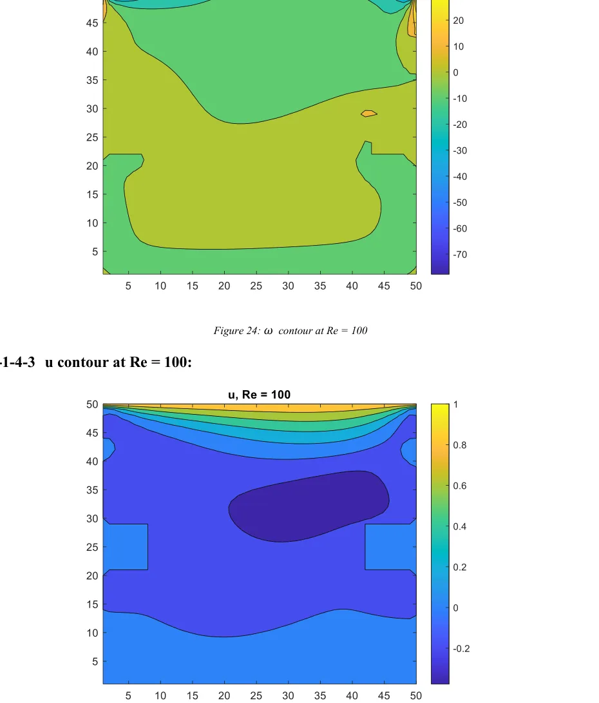
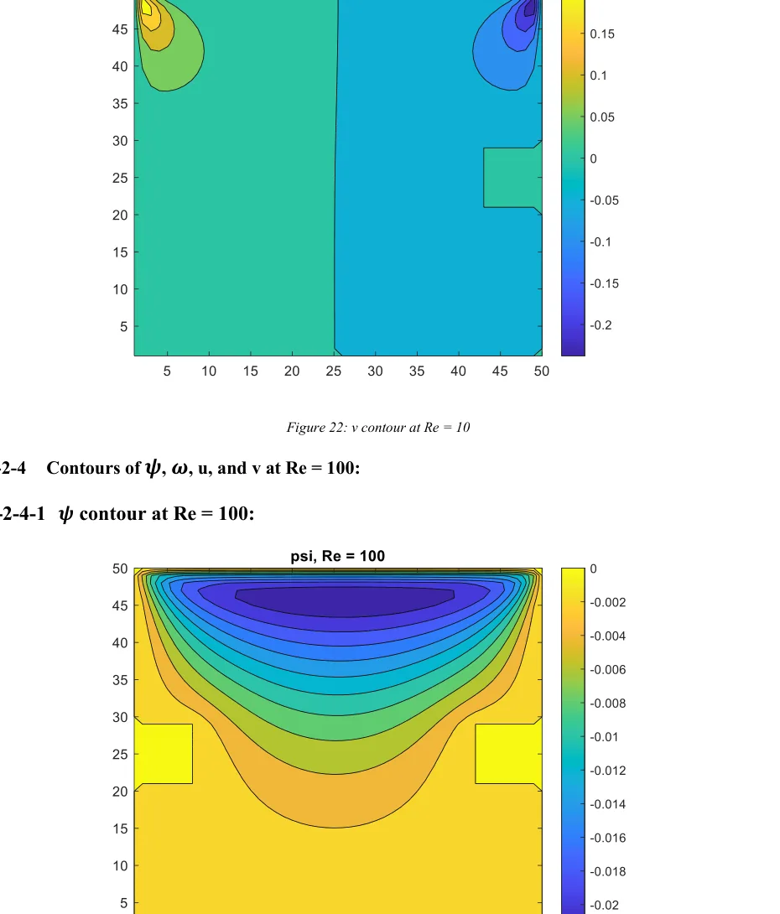

CFD & Scientific Computing · Fluid Track
Numerical Solution of Lid-Driven Cavity Flow Using Finite Differences and Iterative Solvers
Computational Fluid Dynamics · University of Tehran
View Full Report (PDF)Download PDF
Project Overview
A two-dimensional steady incompressible-flow solver for a modified lid-driven cavity containing two recesses. The report compares two iterative algorithms across three Reynolds-number cases.
Engineering tools and methods: MATLAB; FDM, Gauss–Seidel, SLOR.
Methodology
Modeling and formulation
Reformulated the steady incompressible Navier–Stokes equations in streamfunction–vorticity form.
Numerical implementation
Discretized the Poisson and vorticity transport equations using finite differences.
Analysis and comparison
Implemented Gauss–Seidel and Successive Line Over-Relaxation (SLOR) solution approaches.
Interpretation and reporting
Compared computed velocity/vorticity fields and the reported iteration counts and runtimes.
Selected Findings and Scope
| Item | Reported result or scope |
|---|---|
| Reynolds numbers | Re = 1, 10 and 100. |
| Gauss–Seidel iteration counts | 2,086; 2,102; 2,636. |
| SLOR iteration counts | 1,126; 1,126; 1,128. |
| Measured execution times | Gauss–Seidel was faster than SLOR in all three reported cases. |
| Methods only discussed | ADI and multigrid appear in the theoretical sections; they are not presented as completed benchmark results. |
The findings above reproduce values and limits stated in the submitted project report. They are reported numerical or design outputs unless explicitly noted otherwise; the full PDF should be consulted for model assumptions and details.
Figures from the Report



Complete Course Project Report
The full 44-page report includes the original technical formulation, calculations, figures, results and the references provided with the submitted course project.
Open Full Report (PDF)Download PDF
The public project copy has text-searchable student registration numbers removed where present; scientific content has not been rewritten.